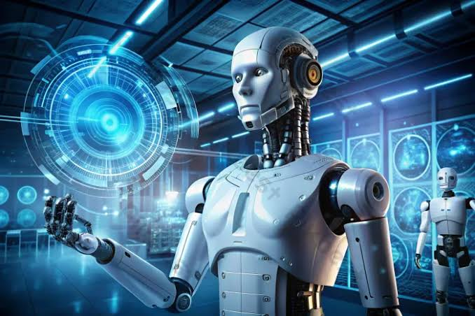

Yapay Zeka Dünyayı Nasıl Değiştiriyor?

Günümüzde yapay zeka sadece bir bilim kurgu fantezisi değil, hayatımızın tam merkezinde yer alan bir gerçekliktir. Özellikle makine öğrenimi sayesinde tıp, eğitim, finans ve üretim alanlarında büyük bir dönüşüm yaşanıyor.
Tıpta Yapay Zeka
Doktorlar artık hastalıkların teşhisinde büyük veri analizlerini kullanıyor. Bu sayede erken teşhis oranları artıyor ve tedavi süreçleri daha hızlı ilerliyor.
Robotik Cerrahi
Milimetrik hassasiyetle çalışan robot kollar, hata payını azaltarak daha güvenli ve etkili operasyonları mümkün kılıyor.